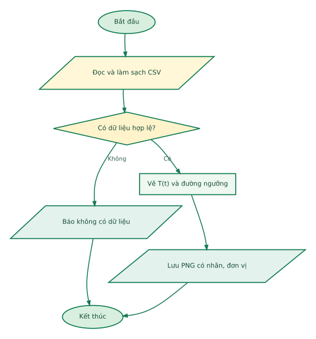

Khóa học / Mô-đun 3 / Bài 13
01 Mục tiêu và kiến thức tiên quyết
- Vẽ đồ thị đường bằng Matplotlib, ghi nhãn và đơn vị các trục.
- Thêm chú giải, ngưỡng kiểm tra có ghi “giả định”, và lưu tệp ảnh.
- Dùng assert và phép kiểm thử dữ liệu biên để kiểm chứng các phép tính.
Kiến thức tiên quyết: bài trước, kiến thức lập trình tương ứng.
02 Tình huống kỹ thuật
Từ dữ liệu nhiệt độ theo thời gian, tạo đồ thị có đơn vị, đường ngưỡng minh họa 30 °C và kiểm thử các phép tính thống kê. Sinh viên phải phân biệt biểu đồ mô tả với kết luận chẩn đoán.
data/nhiet_do_mau.csv; nhiệt độ theo thời gian; ngưỡng quan sát 30 °C.
Đồ thị PNG có hai trục đơn vị phù hợp và nhãn của đường ngưỡng.
03 Kiến thức và thuật ngữ cốt lõi
Trực quan hóa
Đồ thị kỹ thuật cần có tiêu đề đúng đối tượng, đơn vị trục, tên dữ liệu và chú giải khi có nhiều đường. Trục thời gian phải dùng dữ liệu thời điểm thực sự.
Chọn loại biểu đồ
Đường thích hợp diễn biến theo thời gian; scatter thích hợp quan hệ hai đại lượng; cột thích hợp so sánh nhóm. Loại biểu đồ không quyết định chất lượng dữ liệu.
Kiểm định chương trình
assert kiểm tra điều kiện đúng trong lúc phát triển. Để kiểm thử tự động nghiêm túc nên sử dụng pytest/unittest; không đặt logic an toàn duy nhất trong assert vì Python có thể tắt assert bằng chế độ tối ưu.
Diễn giải ngưỡng
Đường ngang ở 30 °C chỉ là ngưỡng do bài học đặt ra, không phải đường tiêu chuẩn của hệ thống lạnh.
04 Xây dựng và kiểm tra thuật toán
Trước khi xem chương trình, hãy đọc dữ liệu đầu vào, chọn điều kiện rẽ nhánh hoặc lặp, rồi dự đoán kết quả. Mã giả mô tả ý nghĩa thuật toán; không phải cú pháp Python thực thi được.

Mã giả
Lần vết các bước phân tích
Đây là lần vết các dòng mã giả, không phải trình thông dịch Python. Tự kiểm tra nhánh điều kiện bằng bảng ca kiểm thử ở mục 07.
05 Chương trình Python đã kiểm tra
Đọc mã, dự đoán kết quả và chạy tệp bai_13.py trong thư mục code. Các mã bài 9 trở lên có thể cần dữ liệu đi kèm từ thư mục data.
from pathlib import Path
import pandas as pd
import matplotlib
matplotlib.use("Agg")
import matplotlib.pyplot as plt
root = Path(__file__).resolve().parent.parent
df = pd.read_csv(root / "data" / "nhiet_do_mau.csv")
df["timestamp"] = pd.to_datetime(df["timestamp"], errors="coerce")
df["temp_c"] = pd.to_numeric(df["temp_c"], errors="coerce")
df = df.dropna(subset=["timestamp", "temp_c"]).sort_values("timestamp")
assert len(df) > 0, "Khong co du lieu hop le"
fig, ax = plt.subplots(figsize=(7, 3.6))
ax.plot(df["timestamp"], df["temp_c"], marker="o", label="Nhiệt độ")
ax.axhline(30, linestyle="--", label="Ngưỡng giả định: 30 °C")
ax.set(xlabel="Thời gian đo", ylabel="Nhiệt độ (°C)", title="Dữ liệu nhiệt độ mô phỏng")
ax.legend()
fig.autofmt_xdate()
dich = root / "output" / "bai13_do_thi.png"
dich.parent.mkdir(exist_ok=True)
fig.savefig(dich, dpi=140, bbox_inches="tight")
plt.close(fig)
print("So diem:", len(df), "| Da luu:", dich.name)
06 Thử nghiệm tham số có hướng dẫn
Thay đổi đầu vào để kiểm tra trực giác và đối chiếu với kết quả dự đoán. Trình khám phá này được lập trình lại bằng JavaScript theo bài toán minh họa, không phải kết quả chạy mã Python.
07 Thực hành và kiểm thử
Thực hiện các nhiệm vụ theo thứ tự từ có hướng dẫn đến độc lập; ghi lại kết quả thực tế của chương trình và so sánh với kết quả kỳ vọng.
- Thay đồ thị đường bằng scatter và giải thích sự khác biệt.
- Tạo đồ thị giá trị dòng điện (A) từ cùng file, tuyệt đối không ghi sai đơn vị.
- Viết ba assert cho một hàm thống kê nhiệt độ.
Bảng kiểm thử bắt buộc
| Ca kiểm thử | Dữ liệu/điều kiện | Kết quả kỳ vọng |
|---|---|---|
| Dữ liệu mẫu | 7 dòng hợp lệ | Đồ thị có 7 điểm |
| Không có dữ liệu | df rỗng | Kiểm tra dừng rõ ràng |
| Mốc ngưỡng | T=30 °C | Nằm trên đường 30 °C |
| Trục đơn vị | Nhiệt độ | Trục tung ghi °C |
08 Vận dụng vào chuyên ngành
Trực quan hóa dữ liệu nhiệt độ buồng lạnh và chỉ ra khoảng thời gian biến động.
Vẽ điện áp ắc quy theo thời gian đo, không suy ra tình trạng hỏng chỉ từ một hình.
09 Trắc nghiệm và phản hồi
Mỗi câu có bốn phương án A/B/C/D. Chọn một phương án cho mỗi câu rồi nhấn Chấm và giải thích để xem vì sao từng phương án đúng hoặc chưa phù hợp.
Rubric tham khảo (100 điểm)
| Thành phần | Điểm |
|---|---|
| Đặc tả dữ liệu, đơn vị, giả thiết | 20 |
| Mã giả, trình tự thuật toán | 20 |
| Mã Python và tổ chức hàm/dữ liệu | 25 |
| Kiểm thử, đối chiếu, phân tích sai số | 25 |
| Giải thích và đề xuất cải tiến | 10 |
10 Nhật ký học tập và đánh dấu tiến độ
Tiến độ và ghi chép chỉ lưu trong trình duyệt hiện tại; không đồng bộ với hệ thống điểm của trường.
11 Tài liệu tham khảo và nguồn
| Nguồn | Vai trò và phạm vi sử dụng |
|---|---|
| Python for Science and Engineering.pdf | H.-P. Halvorsen — tính toán số, giải phương trình, đồ thị, mô phỏng và dữ liệu kỹ thuật. |
| Matplotlib Documentation | Matplotlib cho đồ thị kỹ thuật. |
| BAI THUC HANH PYTHON CO BAN 2022.pdf | Khoa CNTT, bài thực hành Python cơ bản — nhập/xuất, điều khiển, dữ liệu, hàm và tổng hợp. |
Học liệu mới được viết lại theo định hướng sư phạm. Không trích lại nguyên văn hoặc phân phối các slide/sách gốc trong gói website.